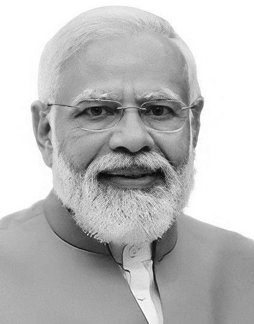

14th Prime Minister of India
“Dreams are not seen when you sleep, dreams are those that do not let you sleep.”
Narendra Damodardas Modi, born on 17 September 1950 in Vadnagar, Gujarat, rose from humble beginnings to become one of India’s most influential and transformative leaders. His journey— from a child helping his father sell tea at a railway station to becoming the 14th Prime Minister of India—is a story of determination, discipline, and relentless hard work.
From a young age, Modi showed deep interest in service and leadership. He joined the RSS during his teenage years, developing strong organizational skills and a passion for nation-building. After years of grassroots work, he entered mainstream politics through the Bharatiya Janata Party (BJP) and quickly earned a reputation as a decisive, visionary leader.
In 2001, Modi became the Chief Minister of Gujarat, a position he held for 13 years. His tenure transformed Gujarat into one of India’s fastest-growing states, known for improved infrastructure, industrial growth, and innovation. His leadership in Gujarat laid the foundation for his rise at the national level.
In 2014, Narendra Modi led the BJP to a historic victory and became the Prime Minister of India. His governance focused on development, digital transformation, anti-corruption, and empowering the poor. Major initiatives include Digital India, Make in India, Swachh Bharat Abhiyan, Ujjwala Yojana, Jan Dhan Yojana, GST, and Ayushman Bharat.
Modi’s leadership strengthened India’s global presence and inspired millions to believe in a self-reliant nation—Atmanirbhar Bharat. His life stands as a powerful reminder that with dedication and an unwavering sense of purpose, anyone can transform their life and serve the nation.